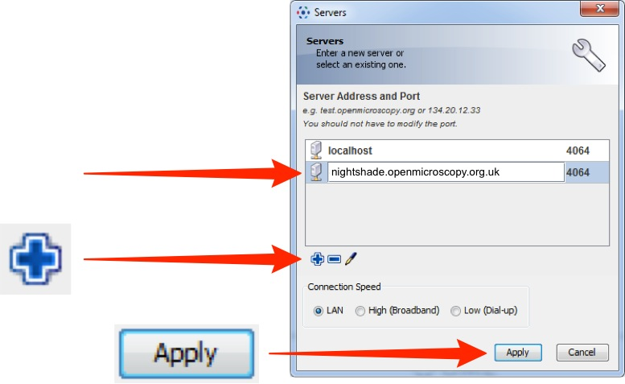
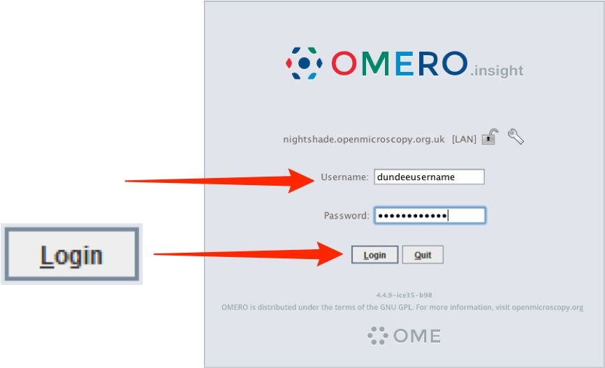

For IT-managed Windows machines with no administrator privileges, first uninstall any previously installed OMERO.insight using "Programs and Features Manager"Programs and Features Manager. Then, install the latest available OMERO.insight from the "Software Centre" app, as described in the UoD IT Software Centre documentation.
Note
OMERO.insight installation is usually short, nevertheless the "Software Centre" might inaccurately report "Installing" or even "Failed". A shortcut to the newly installed OMERO.insight on your Desktop and an OMERO.insight item in your Start menu will be automatically created. Once you see the shortcut or the menu item, try clicking on either of those and this will start OMERO.insight.
For IT-managed Apple Mac machines, where users do not have administrative privileges.
Open the Self Service.app.
Type "insight" into the search box in top left of the Self Serivice app.
Click the Install button for OMERO.insight.
This will install OMERO.insight directly into the Applications folder of your Mac.
Open the OMERO.insight client.


Adding server name and logging in
Adding the server is only required the first time an OMERO server is accessed from the computer.
-
Click on the Spanner icon.

-
In the Add Server dialog box, click on the + icon.
Enter the server address:
nightshade.openmicroscopy.org
Click on Apply.
 -
Enter your SLS Username and Password.
Click on Login.
 -
When you log into OMERO for the first time, you will be in a "default" group, My Data, which is Private, so only you can see data you place in that group.
Being a member of a read-only or read-annotate group in OMERO allows you to share data with other members of the group.
Your lab or PI may have a group you wish to use for collaborating with colleagues.
Ask your PI to add you to their group or send an email to the Nightshade giving the names of the groups you wish to be added to.
More details on using groups and sharing data is on the Help page:
Joining Groups
Importing image data
-
Click the Importer icon to add image data.
Use the File Chooser in the Importer window to select and queue data for import.

-
Specify a location for saving imported data:
- select a group if you are a member of more than one
- a new project and/or dataset can be created
- an existing project and/or dataset can be selected from the drop-downs
- a new dataset can be automatically created from the source folder
- click Add to the Queue

Data to be imported appears in queue pane.
When ready click on Import.

Using OMERO.web
-
OMERO.web allows you to view your data from any web browser with the URL:
You do not have to enter a server name.
OMERO.web uses the same login, and has the same functionality, as OMERO.insight, except OMERO.web cannot import data or create Regions of Interest (ROIs).

Help and Support
Detailed User Guides for common workflows using OMERO.insight and OMERO.web are available online and for download at:
For help to get started using OMERO or any other questions please email us at: